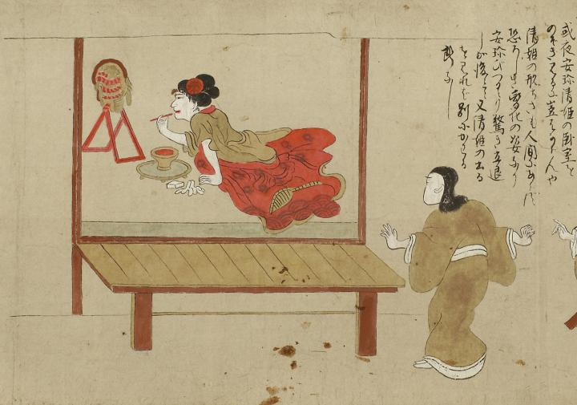

清姫；キヨヒメ，安珍；アンチン，蛇；ヘビ

画面手前に縁側があり、その奥の部屋で清姫が鏡に向かっている。髪型はつぶし島田で、赤い上掛けを腰までおろし、襦袢姿で紅をひいている。着物の裾あたりに、蛇の尾と思しきものが覗いている。手元には、脚付きの丸い盆の上に鉢に入った紅があり、おしろいらしき直方体のものと、手拭いのようなものがある。向かって左側に交脚式の鏡立にのった丸鏡があり、とぐろを巻く赤い蛇の姿がうつっている。手前右側に部屋を覗き見る安珍の姿がある。詞書には「或夜安珍清姫の臥室をのぞき見るに豈はからんや清姫の形ちさも人間にあらず恐ろしき変化の姿なり安珍びつくり驚き立退しが後にて又清姫の出るを見れば別にかわる所なし」とある。
出典：親書誌：U426_nichibunken_0055：道成寺縁起；ドウジョウジエンギ／日付：2006／資源識別子：U426_nichibunken_0055_0001_0000
Copyright (c)2010- International Research Center for Japanese Studies, Kyoto, Japan. All rights reserved.